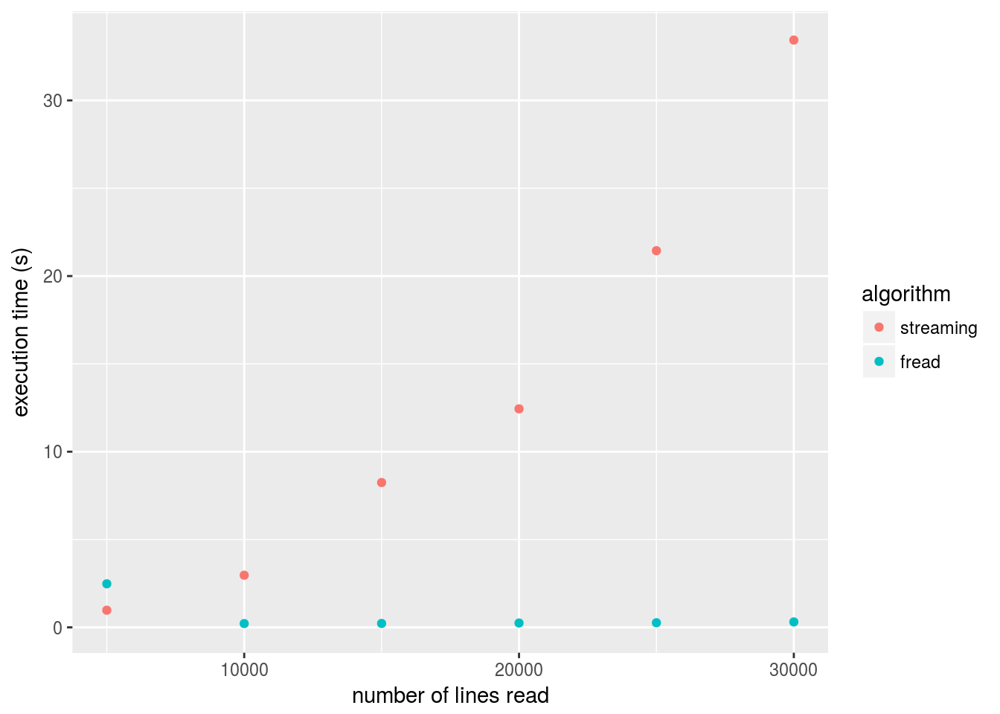

R is known to have difficulties with large (text) files. Here, we will explore some best practices that make working with large data files less painfull.
Jump to our takeaway messages right away!
You can just read this tutorial and apply the options directly on your own (big) data sets directly. In order to test the R code yourself, some example .csv (text data) and .db (sqlite data) are made available for download. The example files are from the INBO Lifewatch GPS bird tracking project. In this tutorial, we will work with both a csv and a sqlite representation of a set of processed log files. For more background information on the processing of the GPS tracking data, check our BirdTrackingEtl package.
csv.name <- "2016-04-20-processed-logs-big-file-example.csv"
db.name <- "2016-04-20-processed-logs-big-file-example.db"The evaluation of the next code chunk is ignored by default as the downloading and unzipping of the files results in more than 3 GB of data. If you do want to download the files yourself and test the other chunks, run the code and download the csv and sqlite examples. Make sure you have the R.utils package available (for unzipping the downloaded files). If not, use the command install.packages("R.utils") in your R console to download the package.
library("R.utils")
# download the CSV file example
csv.url <- paste("https://s3-eu-west-1.amazonaws.com/lw-birdtracking-data/",
csv.name, ".gz", sep = "")
if(!file.exists(csv.name)){
download.file(csv.url, destfile=paste(csv.name, ".gz", sep = ""))
gunzip(paste(csv.name, ".gz", sep = ""))
}
# download the sqlite database example
db.url <- paste("https://s3-eu-west-1.amazonaws.com/lw-birdtracking-data/",
db.name, ".gz", sep = "")
if(!file.exists(db.name)){
download.file(db.url, destfile=paste(db.name, ".gz", sep = ""))
gunzip(paste(db.name, ".gz", sep = ""))
}library("data.table")If you really need to read an entire csv in memory, by default, R users use the read.table method or variations thereof (such as read.csv). However, fread from the data.table package is supposed to be a lot faster. Let’s measure the time to read in the data using these two different methods.
read.table.timing <- system.time(read.table(csv.name, header = TRUE, sep = ","))
data.table.timing <- system.time(allData <- fread(csv.name, showProgress = FALSE))
data <- data.frame(method = c('read.table', 'fread'),
timing = c(read.table.timing[3], data.table.timing[3]))
data## method timing
## 1 read.table 270.233
## 2 fread 23.319fread is indeed much faster then the default read.table. However, the result of fread is a data.table, not a data.frame. The data.table package describes the data.table object as a more performant replacement for the data.frame. This means that selecting, filtering and aggregating data is much faster on a data.table compared to the standard data.frame but it requires you to use a slightly different syntax.
You can find the data.table package on CRAN. A good place to learn this package are the package vignettes. The introduction to data.table should be enough to get started.
If you are not able to read in the data file, because it does not fit in memory (or because R becomes slow when you load the entire dataset), you will need to limit the amount of data that will actually be stored in memory. There are a couple of options which we will investigate:
sqldfLimiting the number of lines you read is easy. Just use the nrows and/or the skip option (available to both read.table and fread). skip can be used to skip a number of rows, but you can also pass a string to this parameter causing fread to only start reading lines from the first line matching that string. Let’s say we only want to start reading lines after we find a line matching the pattern 801,2014-06-29. We can do that like this:
sprintf("Number of lines in full data set: %s", nrow(allData))## [1] "Number of lines in full data set: 3761058"subSet <- fread(csv.name, skip = "2015-06-12 15:14:39", showProgress = FALSE)
sprintf("Number of lines in data set with skipped lines: %s", nrow(subSet))## [1] "Number of lines in data set with skipped lines: 9998"Skipping rows this way is obviously not giving you the entire dataset. This strategy is actually only useful for doing some exploratory analysis on a subset of your data, and look for other ways to upscale this analysis to the full dataset when you’re defined your analysis. In the next section, some mor powerful subselection options will be explained.
Limiting the number of columns you read can be a more useful strategy. If you only need 4 columns of the 21 columns present in the file, you can tell fread to only select those 4. This can have a major impact on the memory footprint of your data. The option you need for this is: select. With this, you can specify a number of columns to keep. The opposite - specifying the columns you want to drop - can be accomplished with the drop option.
fourColumns = fread(csv.name, select = c("device_info_serial", "date_time",
"latitude", "longitude"),
showProgress = FALSE)
sprintf("Size of total data in memory: %s MB", utils::object.size(allData)/1000000)## [1] "Size of total data in memory: 1434.074264 MB"sprintf("Size of only four columns in memory: %s MB", utils::object.size(fourColumns)/1000000)## [1] "Size of only four columns in memory: 365.90692 MB"The difference might not be as large as you would expect. R objects claim more memory then needed just to store the data alone. (they keep pointers, and other object attributes) But still, the difference could save you.
The sqldf package allows you to run SQL like queries on a file, resulting in only a selection of the file being read. It allows you to limit both the number of lines and the number of rows at the same time. However, in the background, this actually creates a sqlite database on the fly to execute the query. Consider using the package when starting from a csv file, but the actual strategy boils down to making a sqlite database file of your data. In the section The database file strategy, we will focus on the usage and handling of a sqlite database.
Short: streaming a file in R is a bad idea. If you are interested why, read the rest of this section.
Streaming a file means reading it line by line and only keep the lines you need or do stuff with the lines while you read through the file. It turns out that R is really not very efficient in streaming a file. The main reason is the memory allocation process that has difficulties with a constantly growing object (which can be a dataframe containing only the selected lines).
In the next code block, we will read parts of our data file once using the fread function, and once line by line. You’ll appreciate the performance issue with the streaming solution.
library(ggplot2)
allowedDevices = c(753, 801, 852)
minDate = strptime('1/3/2014',format = '%d/%m/%Y')
maxDate = strptime('1/10/2014',format = '%d/%m/%Y')
streamFile <- function(limit) {
con <- file(csv.name, open = "r")
selectedRecords <- list()
i <- 0
file.streaming.timing <- system.time(
while (i < limit) {
oneLine <- readLines(con, n = 1, warn = FALSE)
vec = (strsplit(oneLine, ","))
selectedRecords <- c(selectedRecords, vec)
i <- i + 1
}
)
close(con)
return(file.streaming.timing[[3]])
}
freadFile <- function(limit) {
file.fread.timing = system.time(
d <- fread(csv.name, showProgress = FALSE, nrows = limit)
)
return(file.fread.timing[[3]])
}
maxLines <- c(5000, 10000, 15000, 20000, 25000, 30000)
streamingTimes <- sapply(maxLines, streamFile)
freadTimes <- sapply(maxLines, freadFile)
data <- data.frame(n = maxLines, streaming = streamingTimes,
fread = freadTimes)
pdata <- melt(data, id = c("n"))
colnames(pdata) <- c("n", "algorithm", "execTime")
qplot(n, execTime, data = pdata, color = algorithm,
xlab = "number of lines read", ylab = "execution time (s)")
SQLite databases are single file databases meaning you can simply download them, store them in a folder or share them with colleages. Similar to a csv. They are however more powerful than csv’s because of two important features:
sqldf package or database environments you are familiar with. That way, you can reduce the amount of data that’s stored in memory by filtering out rows or columns.Here we’ve downloaded a second file 2016-04-20-processed-logs-big-file-example.db that contains the same data as the 2016-04-20-processed-logs-big-file-example.csv file, but as a sqlite database. Furthermore, the database contains indexes which will dramatically drop the time needed to perform search queries. If you don’t have a SQLite database containing your data, try creating one as described here.
Let’s first connect to the database and list the available tables.
library(RSQLite)
db <- dbConnect(SQLite(), dbname = db.name)
# show the tables in this database
dbListTables(db)## [1] "SpatialIndex"
## [2] "geom_cols_ref_sys"
## [3] "geometry_columns"
## [4] "geometry_columns_auth"
## [5] "geometry_columns_field_infos"
## [6] "geometry_columns_statistics"
## [7] "geometry_columns_time"
## [8] "processed_logs"
## [9] "spatial_ref_sys"
## [10] "spatialite_history"
## [11] "sql_statements_log"
## [12] "sqlite_sequence"
## [13] "vector_layers"
## [14] "vector_layers_auth"
## [15] "vector_layers_field_infos"
## [16] "vector_layers_statistics"
## [17] "views_geometry_columns"
## [18] "views_geometry_columns_auth"
## [19] "views_geometry_columns_field_infos"
## [20] "views_geometry_columns_statistics"
## [21] "virts_geometry_columns"
## [22] "virts_geometry_columns_auth"
## [23] "virts_geometry_columns_field_infos"
## [24] "virts_geometry_columns_statistics"Let’s try to select rows where the device id matches a given value (e.g. 860), and the date time is between two given timestamps. For our analysis, we only need date_time, latitude, longitude and altitude so we only select those.
sqlTiming <- system.time(data <- dbGetQuery(conn = db,
"SELECT date_time, latitude, longitude, altitude
FROM processed_logs
WHERE device_info_serial = 860
AND date_time < '2014-07-01'
AND date_time > '2014-03-01'"
))
print(sqlTiming[3])## elapsed
## 11.778This provides a convenient and fast way of requesting subsets of data from our big data file. We could do the same analysis for each of the serial numbers, each time only loading that subset of the data. As an example, consider the calculation of the average altitude over the specified period for each of the bird serial identifiers in the list serial_id_list. By using a for loop, the calculation is done for each of the birds separately and the amount of data loaded into memory at the same time is lower:
serial_id_list <- c(853, 860, 783)
print("Average altitude between 2014-03-01 and 2014-07-01:")## [1] "Average altitude between 2014-03-01 and 2014-07-01:"for (serialid in serial_id_list) {
data <- dbGetQuery(conn = db,
sprintf("SELECT date_time, latitude, longitude, altitude
FROM processed_logs
WHERE device_info_serial = %d
AND date_time < '2014-07-01'
AND date_time > '2014-03-01'", serialid))
print(sprintf("serialID %d: %f", serialid, mean(data$altitude)))
}## [1] "serialID 853: NA"
## [1] "serialID 860: 23.550518"
## [1] "serialID 783: 14.900030"Remark that we use the sprintf function to replace dynamically the serialID in the sqlite query we will execute. For each loop, the %d is replaced by the value of the serial id of the respective loop. Read the manual of the sprintf function for more insight and options with this kind of replacement (or substitution).
If you’re not comfortable with writing queries in SQL, R has a great alternative: dplyr. Dplyr can connect to a SQLite database and you can perform the same operations on it that you would do on a dataframe. However, dplyr will translate your commands to SQL, allowing you to take advantage of the indexes in the SQLite database.
library(dplyr)
my_db <- src_sqlite(db.name, create = FALSE)
bird_tracking <- tbl(my_db, "processed_logs")
results <- bird_tracking %>%
filter(device_info_serial == 860) %>%
select(date_time, latitude, longitude, altitude) %>%
filter(date_time < "2014-07-01") %>%
filter(date_time > "2014-03-01")
head(results)## Source: query [?? x 4]
## Database: sqlite 3.11.1 [2016-04-20-processed-logs-big-file-example.db]
##
## date_time latitude longitude altitude
## <chr> <dbl> <dbl> <dbl>
## 1 2014-03-10 12:43:37 44.02479 -7.593672 626
## 2 2014-03-10 12:58:32 44.05553 -7.672856 405
## 3 2014-03-10 13:13:52 44.05931 -7.691700 326
## 4 2014-03-10 13:28:57 44.06181 -7.708990 250
## 5 2014-03-10 13:43:54 44.06501 -7.724725 174
## 6 2014-03-10 13:59:06 44.06468 -7.726737 23Dplyr provides the ability to perform queries as above without the need to know SQL. If you want to learn more about how to use dplyr with a SQLite database, head over to the vignette.
data.table package and read the file with its fread function.sqldfdplyr